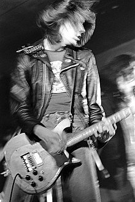
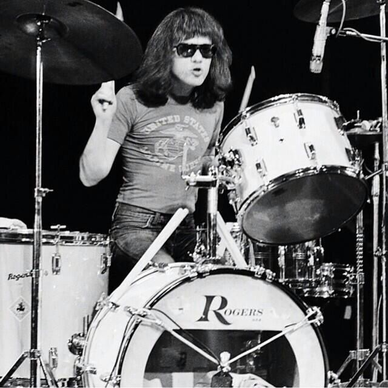
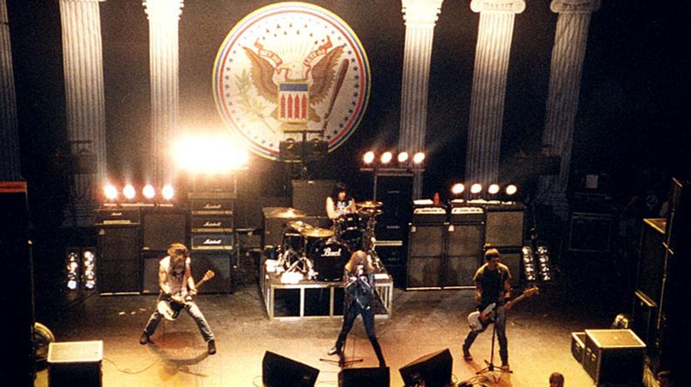

Joey Ramone (Jeffrey Hyman): Vocalista y cofundador de la banda. Con su distintiva voz nasal, fue una figura icónica del punk rock.
Johnny Ramone (John Cummings): Guitarrista y miembro fundador. Conocido por su estilo de tocar la guitarra de forma rápida y directa, fue un elemento clave en el sonido característico de los Ramones.

Dee Dee Ramone (Douglas Colvin): Bajista y letrista principal. Contribuyó significativamente a la imagen y actitud punk de la banda, además de componer muchas de sus canciones más emblemáticas.
Tommy Ramone (Tom Erdelyi): Baterista original y luego productor. Fue el primer baterista de la banda y también se desempeñó como productor en algunos de sus álbumes.
Los Ramones fueron una influyente banda de punk rock formada en Nueva York en 1974. Con un sonido rápido, simple y enérgico, lanzaron su álbum debut homónimo en 1976, que marcó el inicio del movimiento punk en Estados Unidos. A pesar de no lograr un gran éxito comercial durante su existencia, son considerados una de las bandas más importantes e influyentes en la historia del rock. La formación original incluía a Joey Ramone, Johnny Ramone, Dee Dee Ramone y Tommy Ramone.
Los Ramones han tenido una gran influencia en la escena musical, especialmente en el género punk rock. Algunas bandas que han sido influenciadas por los Ramones incluyen: The Misfits, Green Day, The Offspring, Rancid, Blink-182, NOFX, The Queers, Screeching Weasel, Descendents, Bad Religion Estas bandas han adoptado elementos del estilo de los Ramones en su música y han contribuido a mantener viva la influencia del punk rock en diversas épocas y escenas musicales.
